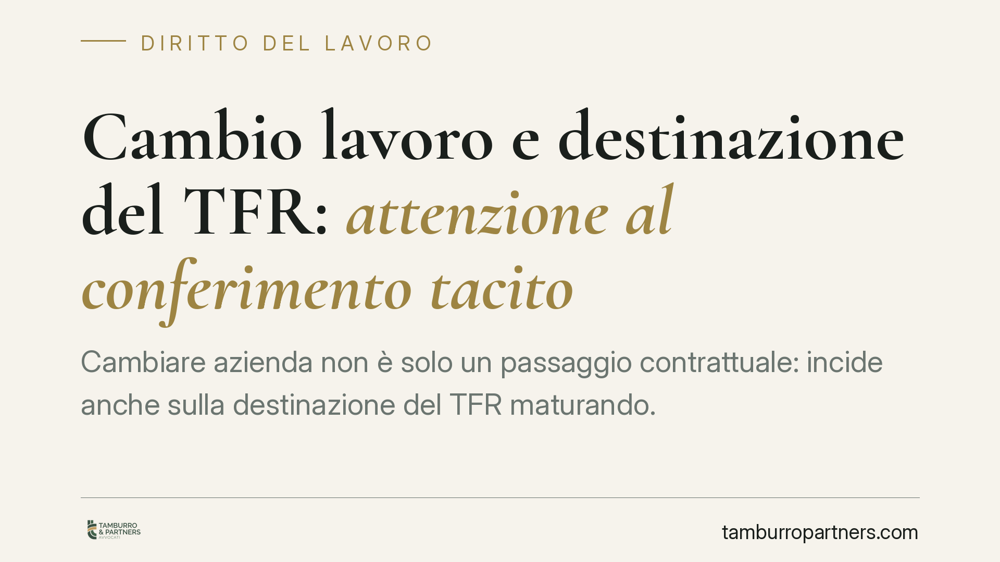

Cambio lavoro e destinazione del TFR: attenzione al conferimento tacito
Cambiare azienda non è solo un passaggio contrattuale: incide anche sulla destinazione del TFR maturando. Se al momento dell'assunzione il lavoratore non compila il modulo di scelta, scatta un meccanismo di silenzio-assenso che destina il TFR alla previdenza complementare. Capire come funziona evita disallineamenti tra la strategia di investimento desiderata e quella applicata di default.

Il fatto
Quando si cambia datore di lavoro, il TFR (trattamento di fine rapporto) che si maturerà presso la nuova azienda non segue automaticamente le scelte fatte in passato. Al momento dell'assunzione il lavoratore deve indicare, tramite l'apposito modulo, se destinare il TFR maturando alla previdenza complementare o mantenerlo in azienda.
Se il modulo non viene compilato entro i termini, interviene un meccanismo di conferimento tacito che decide al posto del lavoratore. È qui che si annidano i problemi più frequenti.
Inquadramento normativo
La disciplina di riferimento è l'art. 8 del D.lgs. 5 dicembre 2005, n. 252, sulla previdenza complementare.
Il comma 7 regola il conferimento tacito: se entro sei mesi dalla data di assunzione il lavoratore non esprime alcuna scelta sulla destinazione del TFR, quest'ultimo affluisce alla forma pensionistica complementare prevista dagli accordi collettivi (di norma il fondo negoziale di categoria) o, in mancanza, alla forma residuale istituita presso l'INPS.
Il comma 9 dello stesso articolo specifica che, in caso di conferimento tacito, la contribuzione è destinata a una linea a contenuto prudenziale, tale da garantire la restituzione del capitale e rendimenti comparabili al tasso di rivalutazione del TFR. In altre parole, il default privilegia la conservazione del capitale, non la crescita.
È opportuno segnalare che eventuali novità normative in materia di adesione automatica alla previdenza complementare devono essere valutate solo sulla base del testo pubblicato in Gazzetta Ufficiale. In questa sede ci atteniamo alla disciplina vigente e consolidata del D.lgs. 252/2005 e agli indirizzi della COVIP, l'autorità di vigilanza sui fondi pensione.
Cosa cambia in concreto
Occorre distinguere tre situazioni che spesso vengono confuse.
a) La posizione già maturata. Il capitale accumulato presso il vecchio fondo pensione non si sposta automaticamente. Resta investito sulla linea scelta a suo tempo, salvo che il lavoratore decida di trasferirlo. Non c'è quindi alcuna "perdita" o riallocazione automatica del pregresso per il solo fatto di aver cambiato lavoro.
b) I nuovi versamenti. Il TFR che matura con il nuovo datore segue una destinazione autonoma. Se il lavoratore non compila il modulo, i nuovi versamenti confluiscono tacitamente nella forma prevista dagli accordi collettivi, sulla linea prudenziale del comma 9.
c) Il trasferimento volontario. Il lavoratore può decidere di trasferire la posizione pregressa nel fondo del nuovo datore, consolidando le due posizioni. È una scelta espressa, mai automatica.
Il rischio pratico non è la perdita del capitale, ma il disallineamento della strategia. Chi aveva scelto una linea azionaria o bilanciata, orientata alla crescita, può ritrovarsi i nuovi versamenti su una linea prudenziale a basso rendimento, semplicemente per non aver compilato un modulo.
Il meccanismo life cycle
Molti fondi propongono opzioni cosiddette *life cycle*: la strategia di investimento si modula in base all'età dell'aderente. Nelle fasce più giovani prevale la componente azionaria, più volatile ma con maggiori attese di rendimento; avvicinandosi al pensionamento, il portafoglio si sposta gradualmente verso strumenti prudenziali.
È una logica sensata, ma non è il default legale del conferimento tacito, che resta la linea prudenziale ex art. 8, comma 9. Chi vuole una gestione life cycle deve sceglierla espressamente.
Cosa fare in concreto
- Compila sempre il modulo di destinazione del TFR al momento dell'assunzione, senza affidarti al silenzio-assenso: indica in modo esplicito dove vuoi far confluire il TFR maturando.
- Verifica la linea di investimento applicata ai nuovi versamenti presso il fondo del nuovo datore e confrontala con la strategia che desideri.
- Valuta il trasferimento della posizione pregressa nel nuovo fondo, se preferisci consolidare, confrontando costi, rendimenti storici e comparti disponibili.
- Controlla il tuo orizzonte temporale: più anni mancano alla pensione, più ha senso valutare comparti orientati alla crescita; a ridosso dell'uscita, la prudenza diventa prioritaria.
- Richiedi al fondo la documentazione informativa e, in caso di dubbi, fatti assistere prima di lasciar decorrere il termine di sei mesi.
In sintesi
Cambiare lavoro non modifica retroattivamente le scelte già fatte, ma apre una finestra decisionale sui nuovi versamenti. Un modulo non compilato equivale a delegare la scelta al meccanismo legale di default. Consigliamo di formalizzare sempre la destinazione del TFR e di verificare periodicamente la coerenza tra strategia scelta e obiettivi previdenziali.
---
Contributo informativo a cura di Tamburro & Partners - Avv. Giuseppe Tamburro. Non costituisce parere legale.
Ogni storia di lavoro ha i suoi tempi.
Se gestisci HR e vuoi un confronto su contenzioso, ispezioni o licenziamenti, scrivi allo studio. Ti rispondiamo entro un giorno lavorativo.